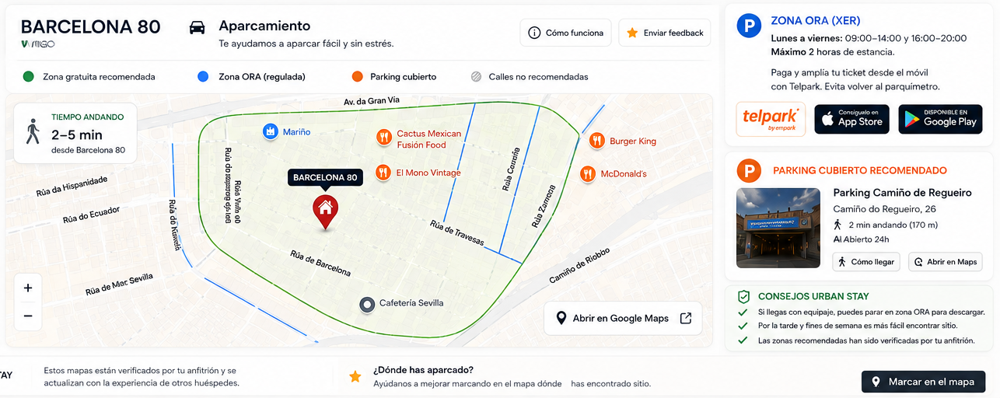

Habitación 1Cama 140 × 200

Bienvenido a tu estancia en Vigo.
Tu apartamento, recomendaciones locales y ayuda práctica, siempre a un toque.

Consulta la zona gratuita recomendada, el horario de la zona ORA y los parkings cubiertos próximos.

Zona ORA: consulta siempre la señalización de cada calle y los horarios indicados. Fuera del horario regulado, el estacionamiento puede ser gratuito.
Calle Barcelona 80 · 36205 Vigo. Un alojamiento amplio, moderno y pensado para grupos.
5 camas de 140 × 200 cm y 1 cama individual de 90 × 200 cm.


También puedes escanear el código QR del marco situado en el apartamento.

No fumar · No se admiten mascotas · Respeta el descanso de los vecinos · Cuida el apartamento.
Mar, gastronomía, barrios con historia y rincones para disfrutar sin prisas.
Una selección de los conciertos, espectáculos y fiestas más próximos. Pulsa cada tarjeta para consultar la información oficial.
Agenda revisada el 5 de agosto de 2026. Los horarios y programas pueden cambiar; consulta siempre la información oficial antes de desplazarte.
Opciones para distintos gustos, presupuestos y momentos.
Precios orientativos por persona. Los tiempos pueden variar según el tráfico, el ritmo al caminar y la ruta elegida.
Accesos directos a las opciones más próximas o recomendadas.
Instala esta guía como una aplicación para abrirla desde la pantalla de inicio y consultar la información esencial incluso con conexión limitada.
El botón se activará cuando Chrome permita la instalación.
Gracias por ayudarnos a preparar el apartamento para los siguientes huéspedes.
Tu valoración ayuda a futuros huéspedes y a seguir mejorando.
Valorar mi estancia en Airbnb Ver el anuncio